Ask anything a hiring panel would ask
Tap a question below and watch the agent build the answer. Every answer comes from my real work, with numbers you can check against my resume.
The work, in the room
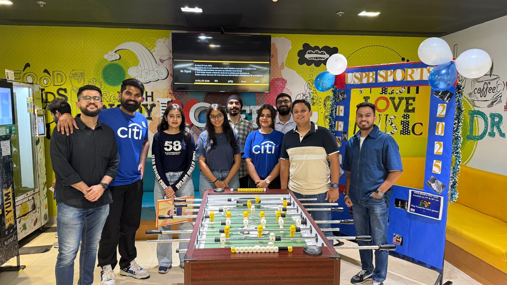
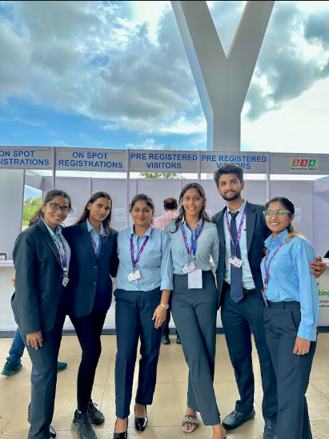
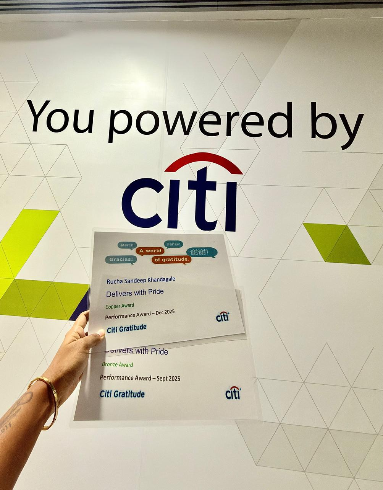
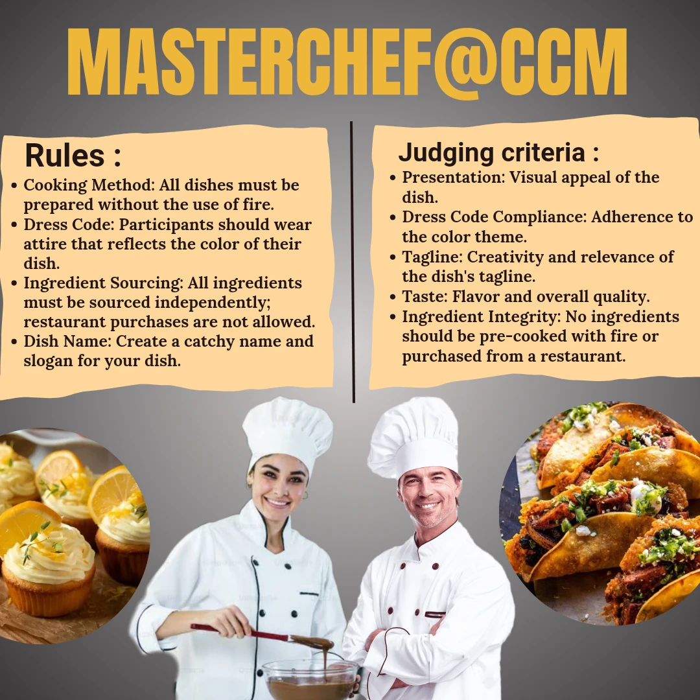
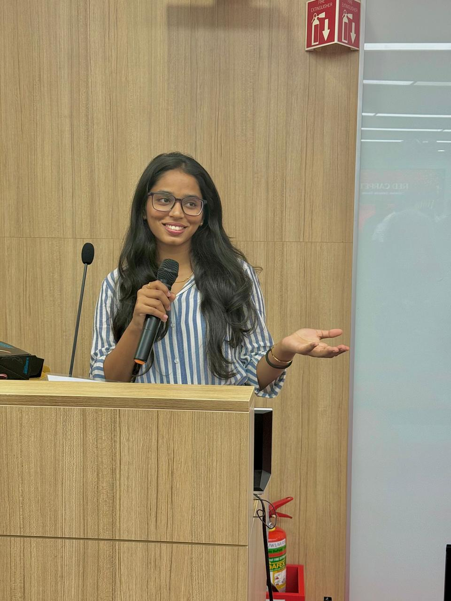
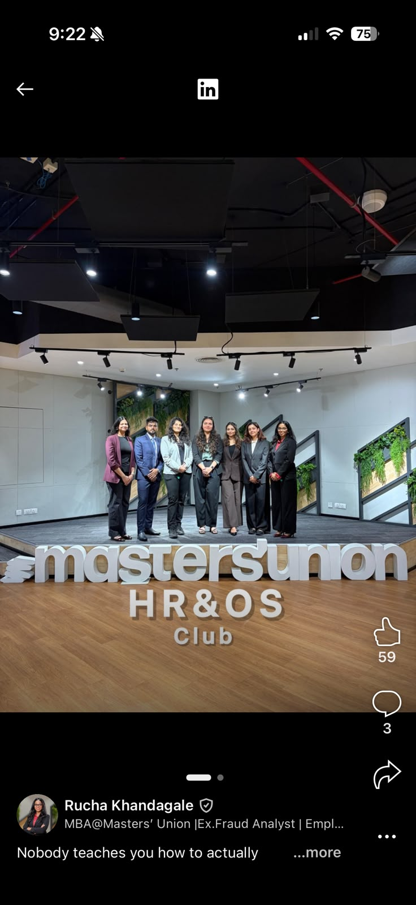
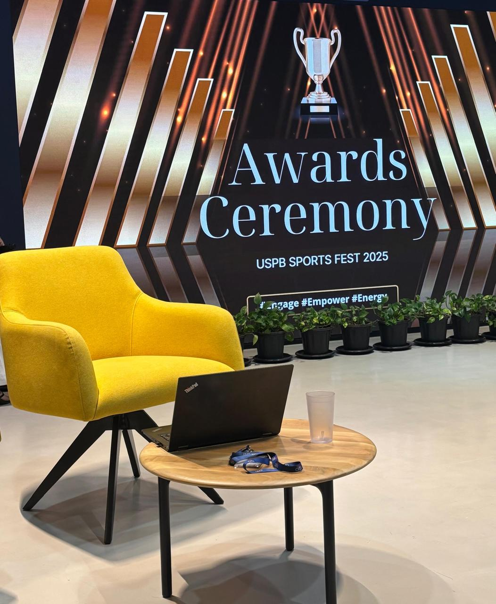
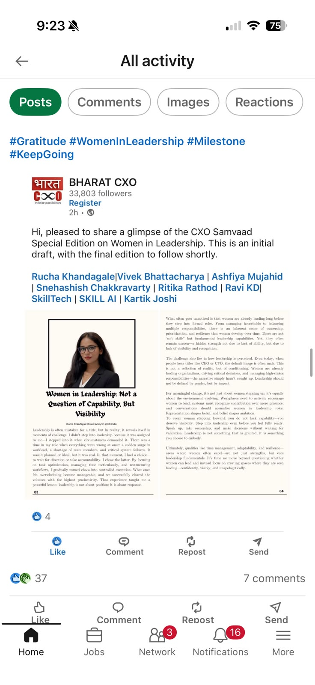
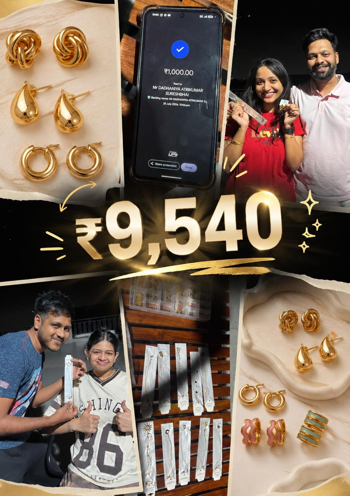
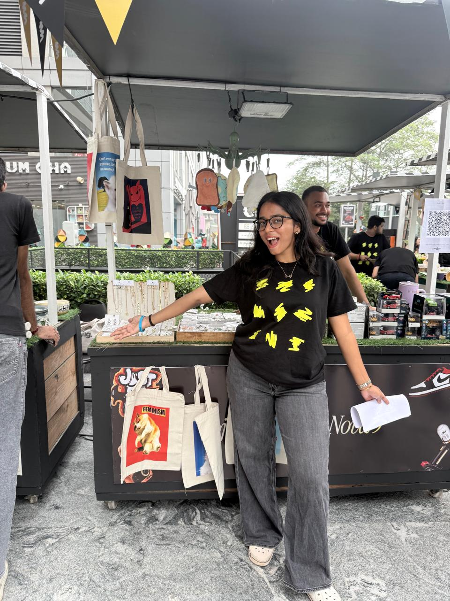
Five things you'd only learn in a conversation
I've done the job's core work under a different title.
Tap to flip ↻At Citi I redesigned workflows across 43 portfolios, allocated daily work across a team of 12 using MIS metrics, trained a new hire, and kept every record audit-ready. As Engagement Committee Head I ran town halls, collected feedback and closed the loop on concerns. That is business partnering, people operations and culture work, done for a bank's fraud team.
I shipped a live product with Claude Code.
Tap to flip ↻unposted.studio runs on GitHub, Razorpay and Cloudflare D1. When Sarvam picks an HRMS, I can read the docs, test the APIs and check whether the workflows actually hold up.
Fair, fast and documented is my default.
Tap to flip ↻123+ fraud investigations, the highest in my team, at 113% vs the team average with 100% accuracy taught me to collect facts, stay neutral and write findings that survive an audit. Employee relations cases need the same discipline.
I've led a team onto a GenAI tool.
Tap to flip ↻I brought Citi Stylus into our workflow and cut translation time from 7 days to 2. At an AI company, HR should be the first team using the product, not the last.
I've started four things from zero.
Tap to flip ↻A drop-shipping store (₹1,07,119 in 2 months, with a data-led pivot), an Airbnb studio I co-manage (about 25 of 30 nights booked), a founder's office role that ended in a full-time offer, and Unposted. I'm comfortable when there's no playbook yet.
Same skills, new context
How what I did in banking ops maps onto what Sarvam's HRBP will do.
How I got here
School, Pune
95% in Class X with 100/100 in Social Science (top 0.1% in India). House Prefect and Cultural Club lead.
BBA, MIT World Peace University
9.87 CGPA, Rank 1 for three semesters. On the placement committee I ran hiring drives for 25+ recruiters and mock interviews for 300+ students. My first taste of talent work.
Founder's Office, Cherry Holidays
Wrote the vision and mission for an early-stage startup and onboarded 8 interns. I learned that culture gets decided in the first few hires.
Citi, Fraud Operations Specialist → SME
Promoted in 1.2 years. Redesigned processes, built MIS dashboards, trained a new hire. In parallel I headed the Employee Engagement Committee: 250+ volunteers, 500+ stakeholders, Sports Fest, Women's Circle.
PGP HR & Organisational Strategy, Masters' Union
Rajni Thethi merit scholarship of ₹12,11,892. Founding core member of the HROS Club. Designed three cultural pillars for a simulated company in the Building Culture course and earned top grades.
Launched Unposted, applying to Sarvam
Built and shipped a product with AI. Now I want to put the same builder's mindset into people operations at India's sovereign AI company.
Comfortable with systems
Where the discipline comes from
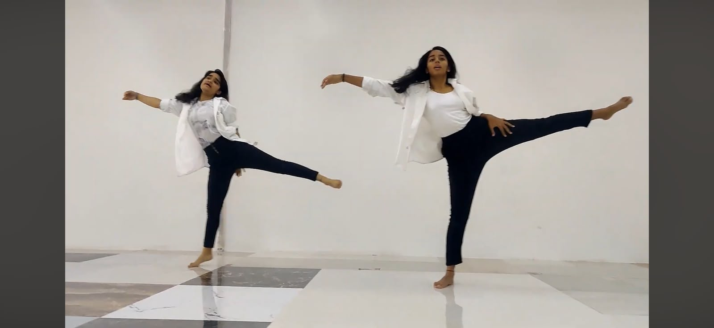
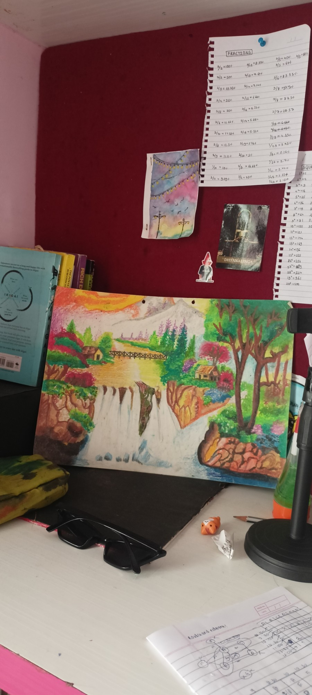
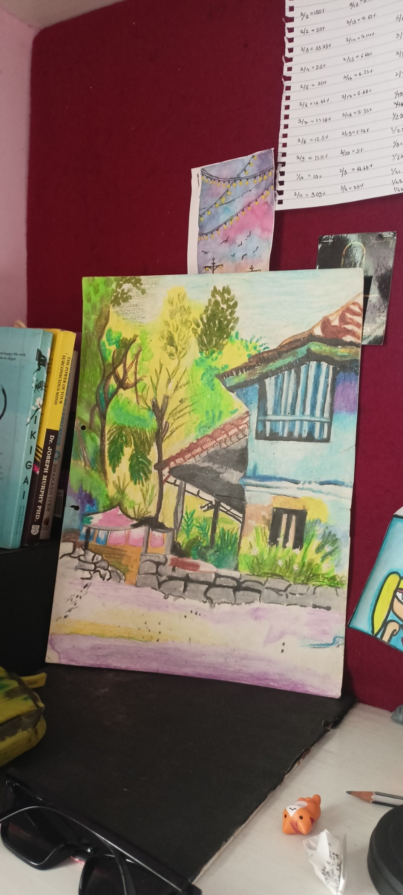
I'd love 20 minutes with you
I'm available for an interview at your convenience, in person in Gurugram or online.